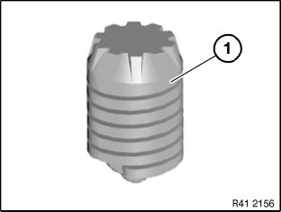
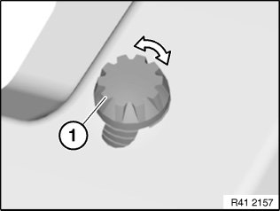
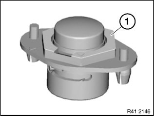
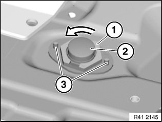
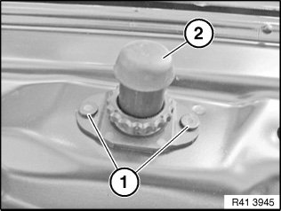
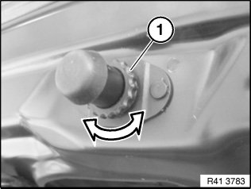
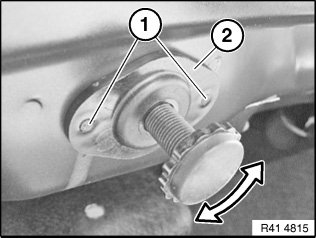

Hood Stop: Adjustments
51 23 ... Adjusting/Replacing Bump Stops

The graphics are schematic representations and are to be applied to the relevant vehicle type.
Prerequisite: Lid must be correctly adjusted.

Version 1:
Following parts must not be damaged:
- (1) Bump stop

Adjust bump stop (1) to correct height by turning left or right.

Type 2:
Replace damaged bump stops (refer to EPC):
- (1) Bump stop

Adjusting version 2:
Turn lock (1) 45° anticlockwise.
Pull bump stop (2) upwards.
Close lid slowly until it is at the same height as the side wall.
Open lid and turn lock (1) clockwise.
Installation note:
Press bump stop into sheet metal part and drive in expanding pins (3).

Version 3:
Lever out expanding rivets (1).
Remove bump stop (2).

Adjusting version 3:
Checking correct adjustment:
- Insert a strip of paper (normal writing paper) between bump stop and stop on body.
- Close lid. Make sure that the paper strip remains between bump stop and stop.
- The bump stop is correctly adjusted when the paper strip can be pulled out with slight resistance .
Adjusting procedures:
Screw in bump stop until the paper strip can be easily pulled out.
Then unscrew bump stop until the paper strip cannot be pulled out any more.
Screw in bump stop until the paper strip can be pulled out "with slight resistance".

Version 4:
Lever out expanding rivets (1).
Remove bump stop (2).
Adjusting version 4:
Set bump stop to the correct height by turning to the left or right.